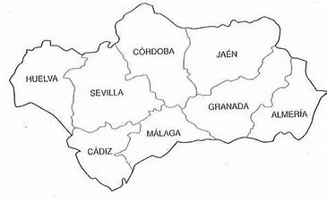

,,,<!DOCTYPE html>
<html lang="es">
<head>
    <meta charset="UTF-8">
    <meta http-equiv="X-UA-Compatible" content="IE=edge">
    <meta name="viewport" content="width=device-width, initial-scale=1.0">
    <title>IMAGES</title>
</head>
<!--style="background-image: url('images/banderaandalucia.jfit') ;"--> <!--esto es para poner un fondo a una pagina con una imagen,
     tambien se puede usar background color pero es menos versatil-->
<!--<body style="background-image: url('images/banderaandalucia.jfit') ;
    background-repeat: no-repeat;
    background-position: center;
    background-attachment: fixed;
    background-size: cover;" >-->

<body style="background: url('images/banderaandalucia.jfif') no-repeat center fixed;">
    <h3>IMAGES</h3>
    <!--
    
    -->
    
    <map name="letras" id="letras">
        <area shape="poly" coords="31,79,21,112,55,141,108,135,102,105,125,82,90,64,70,67"
        href="https://www.juntadeandalucia.es/educacion/portals/web/ced/delegaciones/huelva" target="_blank">
        <area shape="poly" coords="225,167,212,190,202,210,226,221,258,218,275,199,244,159" 
        href="https://www.juntadeandalucia.es/educacion/portals/web/ced/delegaciones/malaga" target="_blank">
        <area shape="poly" coords="146,183,109,202,125,249,183,263,188,219,190,182,147,181" 
        href="https://www.juntadeandalucia.es/educacion/portals/web/ced/delegaciones/cadiz" target="_blank">
        <area shape="poly" coords="323,132,293,148,310,175,340,193,380,177,131,136,390,108" 
        href="https://www.juntadeandalucia.es/educacion/portals/web/ced/delegaciones/granada" target="_blank">
        <area shape="poly" coords="135,91,178,122,117,157,145,149,198,168,119,152,124,176,163,66"  
        href="https://www.juntadeandalucia.es/educacion/portals/web/ced/delegaciones/cordoba" target="_blank">
        <area shape="poly" coords="134,91,188,122,117,157,165,169,198,168,229,152,194,106,163,66" 
        href="https://www.juntadeandalucia.es/educacion/portals/web/ced/delegaciones/sevilla" target="_blank">
        <area shape="poly" coords="414,146,387,172,408,198,430,182,467,181,485,137,471,108"  
        href="https://www.juntadeandalucia.es/educacion/portals/web/ced/delegaciones/almeria" target="_blank">
        <area shape="poly" coords="336,35,292,55,293,100,33,115,367,102,400,79,409,23,366,26" 
        href="https://www.juntadeandalucia.es/educacion/portals/web/ced/delegaciones/jaen" target="_blank">

    
    
    
    
    </map>
</body>
</html> 